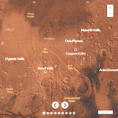

About
-

The "Where On Mars?" Project
Visualising the ExoMars rover candidates landing sites
The "Where On Mars?" project started as an ESAC Trainee Project in collaboration with CartoDB. The objective was to prototype a web map visualisation of ESA's ExoMars 2020 rover candidate landing sites; serving the general purpose of increasing public awareness of the scientific and robotic exploration of Mars in Europe. Learn more
-

The ExoMars 2020 Mission
Searching for Life on Mars
The 2020 mission of the ESA's ExoMars programme will deliver a European rover and a Russian surface platform to the surface of Mars. While the platform will study the martian environment, the rover will travel across the surface to search for signs of past and present life. It will collect samples with a drill and analyse them with next-generation instruments. ExoMars will be the first mission to combine the capability to move across the surface and to study Mars at depth. Learn more.
-

The Landing Site Selection Process
How to find a suitable landing site for the rover?
In October 2013, a Landing Site Selection Working Group (LSSWG) was appointed to make recommendations to the European Space Agency (ESA) and the Russian Federal Space Agency (Roscosmos). After a call to the scientific community for landing sites, four candidate landing sites were shortlisted for further investigation, both in term of scientific interest and engineering safety. In October 2015, Oxia Planum was recommended be considered as one of the two candidate landing sites for the launch opportunity in 2020, with a second to be selected from Aram Dorsum and Mawrth Vallis. In March 2017, Oxia Planum and Mawrth Vallis were selected as final candidates. The year before launch, ESA will make the final decision. Learn more
-

The Interactive Map
How does it work?
The "Where On Mars?" interactive map has been designed to guide you through the main scientific and engineering constraints for the selection of the ExoMars 2020 landing site. It allows you to explore Mars and each candidate landing site using a selection of the same ESA and NASA planetary images, and additional geospatial information used by the scientists involved in the selection process. It relies on CartoDB and other open-source mapping technologies for processing, storing, and visualising data on the web. The source code of the front-end web interface is available on GitHub. Learn more
-
Explorethe landing sites!